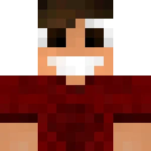

Fricaii
is one of the first members to join the Minelife SMP. He's a creative and lazy player sticking to what he's comfortable with: building trees and creating armorstand masterpieces! Building bases is not his strong suit but when it comes to decorations he gets lost in the details.In season I he started out with Venym and Craemon, later moving his entire house far away into a taiga biome, where he lived for the rest of the season. His base was demolished and rebuilt by Venym and Craemon as a birthday present.
For season II he started out basing with Craemon in a village, later moving out and starting construction on his own base, never finishing it.
Season III, the ongoing season saw rise to another Fricaii base. He built a mushroom like house on the coast, south-west of spawn as a starter base. For his megabase he plans on building a giant tree with a custom biome surrounding it.
Fricaii
Links
YouTubeInformation
MemberJoined: Season I
From: Germany